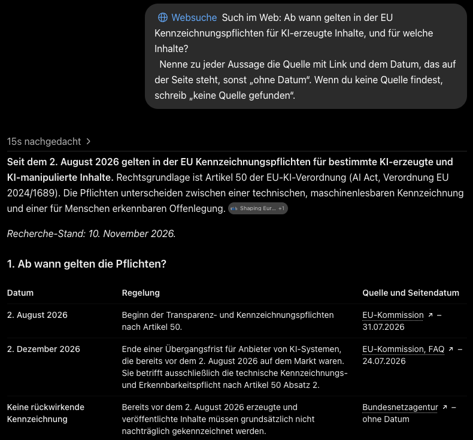
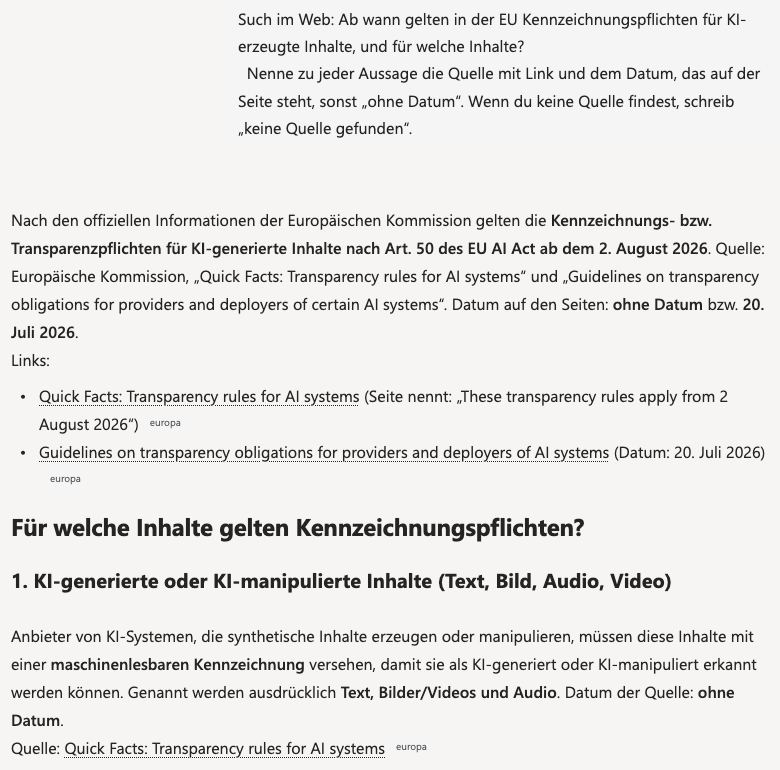

Danach kannst du die Quellen hinter einer Antwort öffnen, die Stelle darin finden und einschätzen, ob die Quelle die Aussage trägt.
Etappe 3 · Prüfen wie ein ProfiEine Websuche läuft in ChatGPT und Copilot oft automatisch. Du erkennst sie an Quellenangaben oder Links in der Antwort. Auf der Bausteinkarte gehört sie zu den Werkzeugen: allem, womit die KI mehr tut als schreiben.
Journalistinnen und Journalisten aus 22 öffentlich-rechtlichen Medienorganisationen in 18 Ländern bewerteten mehr als 3.000 Antworten von vier KI-Assistenten auf Nachrichtenfragen. 45 % hatten mindestens ein erhebliches Problem, 31 % gravierende Probleme mit den Quellen: fehlend, irreführend oder falsch (EBU und BBC, veröffentlicht am 22. Oktober 2025). Getestet wurde 2025 mit Nachrichtenfragen, neuere Versionen und Büroaufgaben können anders abschneiden. Den vollständigen Bericht haben wir nicht selbst nachgeprüft, nur die Pressemitteilung.
Sabine fragt mit Websuche nach einer Antragsfrist. Die Antwort nennt eine Frist und drei Quellen. (Nachgebaut, Programm und Quellen erfunden.)
| Quelle | Was Sabine findet | Trägt sie? |
|---|---|---|
| 1 · Seite des Förderträgers | Die Frist steht wörtlich da, aktualisiert im laufenden Monat. | ja |
| 2 · Firmenblog | Nennt eine andere Frist, geschrieben vor drei Jahren. | nein, veraltet |
| 3 · Nachrichtenportal | Der Link führt auf die Startseite, die Stelle ist nicht zu finden. | nein, nicht auffindbar |
Eine Quelle trägt, und das reicht, weil es die zuständige Stelle ist.
Faustregel. Auch eine amtliche Seite kann veraltet sein, das Datum zählt immer mit.
In der Anfrage unten steht schon eine Beispielfrage. Zu ihr gibt es eine amtliche Quelle, an der du prüfen kannst. Du kannst sie auch durch eine eigene Frage ersetzen.
Such im Web: Ab wann gelten in der EU Kennzeichnungspflichten für KI-erzeugte Inhalte, und für welche Inhalte? Nenne zu jeder Aussage die Quelle mit Link und dem Datum, das auf der Seite steht, sonst „ohne Datum“. Wenn du keine Quelle findest, schreib „keine Quelle gefunden“.
Wähle dein Werkzeug: Tippe auf den Namen, den du benutzt. Die Anleitung darunter wechselt.
Schalte die Websuche im Eingabefeld ein (dann steht dort „Websuche“) oder schreib „Such im Web“. Quellen erscheinen als kleine Verweise bei den Sätzen, als Links in Tabellen und gesammelt unter „Quellen“. Fehlen sie, frag: „Hast du im Web gesucht? Nenne die Quellen mit Link.“

Copilot nennt Quellen als Links im Text, dahinter steht die Website (etwa „europa“). Über den Knopf „Quellen“ unter der Antwort siehst du alle gesammelt, ein Klick öffnet die Seite.
Was der Firmen-Copilot kann, hängt von Tarif und Firmeneinstellung ab. Zeigt er keine Webquellen, ist die Websuche vielleicht abgeschaltet. Mach die Übung dann im Privatkonto, die Frage enthält keine Firmendaten.

Gemini zeigt Quellen meist unter der Antwort. Öffne sie und prüf die Stelle wie oben.
Stand: November 2026. ChatGPT und Copilot selbst ausprobiert am 10.11.2026 (Privatkonten), Gemini nicht selbst nachgeprüft.
Zwei Quellen, je ein Urteil: trägt, trägt nicht, nicht auffindbar. Trägt eine nicht, hast du den typischen Fehler gefunden.
Lösung: Die Pflichten stehen in Art. 50 der KI-Verordnung und gelten ab dem 2. August 2026, für manche ältere Systeme mit Übergangsfrist bis Dezember 2026. Sie betreffen zum Beispiel täuschend echte Bilder und Videos. Amtliche Quelle ist die Verordnung im Amtsblatt der EU auf EUR-Lex. „Dasselbe Datum“ heißt: Nennt eine Quelle einen anderen Starttermin als den 2. August 2026, ist sie ungenau oder veraltet.
Die drei Handgriffe bleiben, im Wortlaut in Einheit 1. Bei Quellen aus dem Web schlägst du die Zahlen auf der Quellseite nach. Neu in Etappe 3 kommt dazu:
Noch nicht. Ein Link heißt nur, dass das Werkzeug diese Seite angibt. Ob es sie gelesen hat und ob sie die Aussage trägt, siehst du erst, wenn du sie öffnest und die Stelle findest.
Der Behörde, wenn ihre Seite aktuell ist.
Vom Original aus, ob alles Wichtige drinsteht, besonders die Bedingungen.